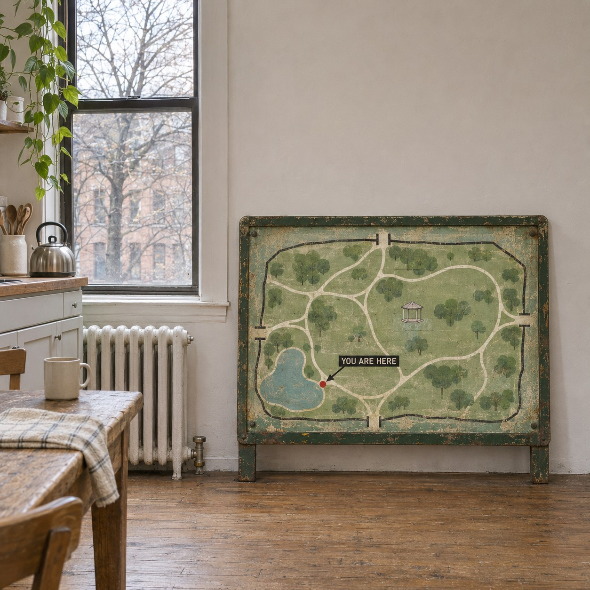
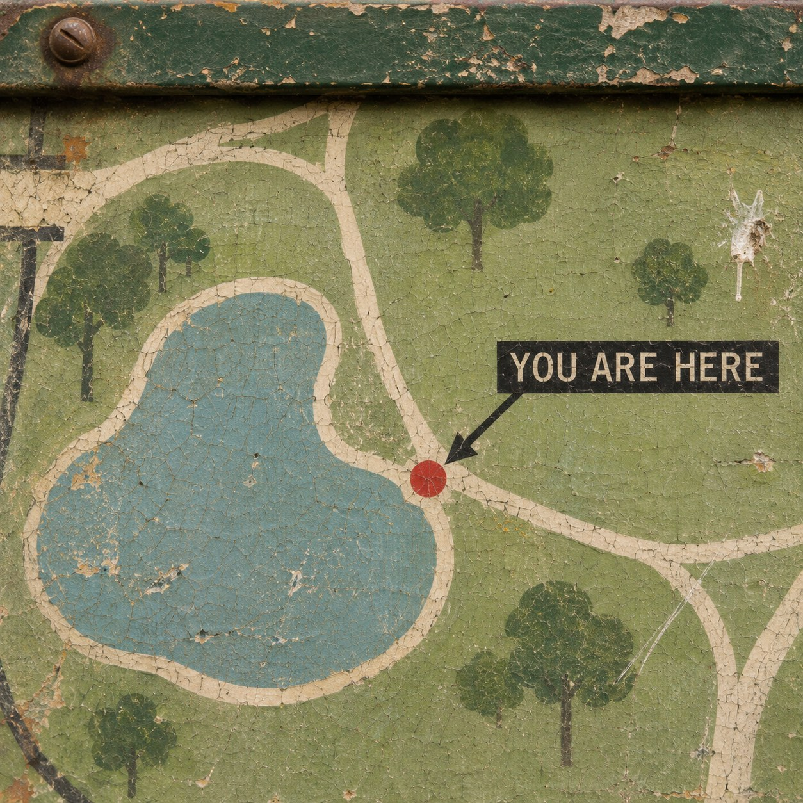

The Wrong Here


This map stood at the gate of a park for many years. Then the park got a new one, and this one was sold off as salvage and carried across the city to a small flat. It still shows every path, the pond, the four gates, the bandstand. All of that is still true. The only thing that went wrong is the red dot.
YOU ARE HERE. The words have not changed and the paint has not moved, and now they are false. Nothing about the map broke. The world simply stayed where it was, and the map left it.
A sign like this is made of two kinds of words. Most of it names things that stay put: a pond, a gate, a bench. But you and here are different. They belong to whoever reads them, wherever that reader stands. You still works. It finds every new person who looks. Here was painted down, so it stayed behind with the park while the rest of the sentence came along.
Robert Smithson carried rock away from a site in New Jersey, set it in wooden bins in a gallery, and hung beside it a map of the place it came from. The place was absent, and the map pointed back to it. This is the same move turned around. The map came, and the place stayed home.
Stand in the kitchen and read it. You are here, it says, and points at a pond two miles away. It is wrong about where you are and right about everything else.
How many of the true things we carry are like this, accurate about the world and mistaken only about us?